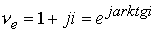
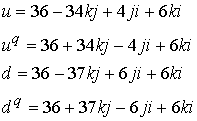
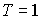

|
В. И. ЕЛИСЕЕВ ВВЕДЕНИЕ В МЕТОДЫ ТЕОРИИ
ФУНКЦИЙ ПРОСТРАНСТВЕННОГО КОМПЛЕКСНОГО ПЕРЕМЕННОГО |
|
8.8 Сумма единичных глюонных вихрей с весовыми коэффициентами определяет структуру поля микрочастицы.
Комплексное пространство описывает структуризацию пространств различных по величине размерности. В главе 4 исследованы варианты такой структуризации как с ростом размерности пространства, так и в пределах одного измерения (рис 48). Каждый уровень (под уровнем понимаем число измерений конкретного пространства) имеет подпространство делителей нуля, которое, как было показано в главе 3, адекватно пространству
светового конуса и которое отвечает за много связность пространства. Математически предельным элементом компактизации служит|
8.8.1 |
Переходя к сферическим координатам делители нуля переведем в изолированные направления и дадим им физическую трактовку
- глюонная масса вихря электрического заряда,
- глюонная масса вихря лептонного заряда,
-глюонная масса гравитационного вихря.
Условная замена выражений глюонных вихрей для сокращения записи дает выражение
|
8.8.2 |
Таким образом, все многообразие частиц имеет глюонное поле в виде (8.8.2) как сумму глюонных полей известных в настоящее время взаимодействий: электромагнитного, лептонного, гравитационного, отличающиеся весовыми коэффициентами.
Весовые коэффициенты каждой микрочастицы вычисляются из кварковых композиций
В связи с этим необходимо вычислить весовые коэффициенты кварков и определить систему кварков. Это было сделано на основе разработанных моделей микрочастиц в главе 8. В основу выбора структуры кварков была взята модель нейтрального пиона
Однако опираясь на исследования ядерной материи, проведенной в главе 5, необходимо перейти к шестикомпонентной схеме вихревого состава кварков, оставляя без изменения логику двухкомпонентной системы. Исследования показали, что электромагнитные поля могут образовывать устойчивые ядерные образования с одним
Логика разработанных моделей микрочастиц позволяет нейтральный пион
|
8.8.3 |
где
нейтрино, антинейтрино.В соответствии с моделями нейтрино и антинейтрино
Согласно этим моделям
. Условно .
.Условно
Приведем систему 8.8.3 к виду 8.8.2. Для примера раскроем выражение кварка
u.
Cуммируя развернутые выражения электрически лептонного вихрей получим в соответствии с 8.8.3 кварк u. Аналогичные операции проведем для остальных кварков.В результате получим:
|
 |
8.8.4. |
Перейдем в системе кварков к выражению их через вихревые глюонные поля, в соответствии с формулой 8.8.2. Операции повыделению электрического, лептонного и гравитационного вихря продемонстрируем на примере кварка
u.Обозначение вихрей записано в условном виде. Аналогичные операции дают для остальных кварков:
|
|
8.8.5 |

В данной системе электрические и лептонные поля для всех кварков и антикварков одинаковы, так как они входят в дальнейшем в систему линейных уравнений как неизвестные. Если записать кварки и антикварки через противоположные заряды, то кварки и антикварки будут иметь одинаковые весовые коэффициенты. Линейная система даст в расчете одинаковый результат. То есть энергия единичного заряда не зависит от его знака.
В соответствии с кварковой композицией нейтрального пиона
Будем иметь
Таким образом, глюонные вихри лептонного и электрического заряда аннигилировали. Глюонное поле нейтрального пиона имеет только гравитационный зарядовый вихрь. Исследуем на примере кварков
|
8.8.6 |
Кварковая композиция глюонного поля нейтрального пиона определяется прежними весовыми коэффициентами
.Из сравнения выражений 8.8.4 и 8.8.5, 8.8.6 делаем вывод: при изменении знака заряда глюонных вихрей на противоположные весовые коэффициенты
u кварка становятся равными весовым коэффициентамСогласно определению микрочастицы и античастицы заряды глюонных полей
антикварком является
Нейтральный пион выразится в виде
Таким образом, весовые коэффициенты кварка и антикварка равны. Кварки в данном случае отличаются только зарядами глюонных полей. Все операции симметрично повторяются и для кварков . Зарядовые глюонные поля разных знаков аннигилируют, при этом энергия аннигиляции глюонных полей переходит в энергию вещества. Энегрию вещества в глюонном поле рассматривает как энергию скомпенсированных глюонных полей. Это вытекает из модельного построения микрочастиц (глава 8).
Кварковая композиция положительного пиона . Подставляя в эту композицию значения кварков получим выражение положительного пиона через весовые коэффициенты глюонных единичных вихрей.
Отрицательный весовой коэффициент и отрицательный заряд единичного электрического вихря дает изоспин равный +1,
,
Зарядовое сопряжение С меняет как знак электрического вихря, так и знак весового коэффициента, оставляя знак изоспина без изменения.
Отрицательный пион имеет кварковую композицию
и поэтому расчет весовых коэффициентов даетПоложительный весовой коэффициент и отрицательный заряд электрического вихря дает изоспин - 1
,
Изменение знака электрического вихря влечет за собой изменение знака весового коэффициента, оставляя знак изоспина без изменения.
Отрицательный и положительный пионы отличаются величиной вещественной части глюонного поля и знаками проекций зарядовых глюонных вихрей. При изменении знака глюонных полей в любом из пионой получим другой зарядовый пион как античастицу.
В результате имеем выполнение теоремы
CP (сопряжения и зеркального отбражения) .,
-мезоны образуют изотопический триплет частиц с изоспином  и проекциями изоспина 
Нейтральный пион не имеет зарядовых глюонных полей и его изоспин равен нулю, положительный пион имеет положительные весовые коэффициенты перед положительно заряженным электрическим глюонным полем и отрицательным лептонным. Изоспин равен +1.
Отрицательный пион имеет отрицательные значения весовых коэффициентов перед положительно заряженным глюонным электрическим полем и отрицательным лептонным. Изоспин равен -1.
Одновременно положительный пион может иметь отрицательные весовые коэффициенты перед отрицательно заряженным электрическим глюонным полем и положительно заряженным лептонным. Однако изоспин равен +1. Для отрицательного пиона будем иметь положительные весовые коэффициенты при отрицательном электрическим глюонным полем и положительным лептонным. Изоспин равен -1.
Современная теоретическая физика микрочастиц не выявила ту пространственную симметрию, которая отвечает знаку заряда, то есть до настоящего времени не определено фундаментальное свойство заряда быть положительным и отрицательным. В связи с этим знак изоспина увязывается со знаком заряда.
Мини оглавление:
[0], [1.1.1, 1.1.2, 1.1.3, 1.1.4, 1.1.5, 1.1.6, 1.1.7, 1.1.8, 1.2, 1.2.1, 1.2.2, 1.2.2.a, 1.2.2.b, 1.2.2.c, 1.2.2.d, 1.2.2.e, 1.2.2.f, 1.2.2.g, 1.2.2.h, 1.2.3, 1.3.1, 1.3.2, 1.3.3, 1.3.4, 1.3.5, 1.3.6, 1.4.1, 1.4.2, 1.5, 1.6, 1.7.1, 1.7.2, 1.7.3.1, 1.7.3.2, 1.7.3.3, 1.7.4.1, 1.7.4.2, 1.8.1], [2.1, 2.2],[3.1, 3.2, 3.3, 3.4.1, 3.4.2, 3.4.3, 3.4.4, 3.4.5],[4.1, 4.2, 4.3, 4.4],[5.1, 5.1.Рис.52, 5.2, 5.3, 5.4, 5.4.Т1, 5.4.Т2, 5.4.Т3, 5.5.1, 5.5.2, 5.5.3, 5.5.4],[6.1.1, 6.1.2, 6.2.1, 6.2.2, 6.2.3, 6.2.4, 6.2.5, 6.3, 6.4.1, 6.4.2, 6.5.1, 6.5.2],[7.1, 7.2, 7.3, 7.4, 7.5, 7.6, 7.7.1, 7.7.2, 7.8.1, 7.8.2, 7.8.3, 7.9],[8.1, 8.2.1, 8.2.2, 8.3, 8.4, 8.5, 8.6, 8.6.T1, 8.7, 8.8.1, 8.8.2, 8.8.3, 8.9.1, 8.9.2, 8.9.3, 8.10, 8.10.T2, 8.10.T3],[9.1, 9.2, 9.3, Рис.88, 89, 90, 91, 92, 93, 94, 95, 96, 97, 98, 99, 100],[10.1, 10.2, 10.3, 10.4, 10.5, 10.6, 10.7, 10.8, 10.9, 10.10, 10.11, 10.12, 10.13, 10.14, 10.15.1, 10.15.2, 10.16.1, 10.16.2, 10.17, 10.18],[11]
Размещенный материал является электронной версией книги: © В.И.Елисеев, "Введение в методы теории функций пространственного комплексного переменного", изданной Центром научно-технического творчества молодежи Алгоритм. - М.:, НИАТ. - 1990. Шифр Д7-90/83308. в каталоге Государственной публичной научно-технической библиотеки. Сайт действует с 10 августа 1998.
E-mail: mathsru@gmail.com